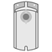
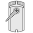
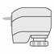
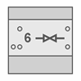
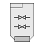

HVAC 执行器设备属性
列出的属性显示在Hardware and network editor > Inspector window > Properties当在 KNX PL-Link 的设备在Device view选项卡。
|
GDB111.1 | GDB111.9 | GDB181 | SSA118.09HKN | N605D41 | RL605D23 |
 |  |
|  |  |  |

General and Catalog information
常规和目录信息组提供有关设备的信息。
财产 | 描述 | 默认值 |
|---|---|---|
模式 | 模式显示设备的网络模式。只读。 | KNX PL-Link |
姓名 | 名称是用于输入设备名称的文本字段。该名称用于在设备视图中标识该设备。 | 取决于其他设置。 |
评论 | 注释是一个自由文本字段，用于输入有关设备的任何有用信息。 | - |
功耗 | 功耗显示设备消耗的电量。只读。 单位：[毫安] 该值用于计算 KNX 轨道的剩余电量。 另请参阅功耗和电源KNX rail of PXC3orKNX rail of DXR2. | 取决于设备类型。 |
简称 | 简短名称显示设备的简短描述。只读。 | 取决于设备类型。 |
订单号 | 订单号显示设备类型。只读。 | 取决于设备类型。 |
版本 | 版本显示设备的内部版本。只读。 | - |
描述 | 描述显示设备的简短描述。只读。 | 取决于设备类型。 |
Device information
设备信息组提供有关设备和设置的信息。
属性文本 | 描述 | 默认值 |
|---|---|---|
设备地址 (KNX) | 设备地址 (KNX) 显示具有 KNX PL-Link 的设备的固定标准地址。只读。 | 255（这不是 KNX 地址格式） |
使用的序列号 | 使用的序列号定义了设备识别的方法。
|
|
序列号 | 序列号定义用于设备识别的序列号。 仅当启用使用的序列号时，序列号才启用且相关。 | 000000000000 |
VAV 操作模式 | VAV 操作模式
|
|
位置适应1) | 位置适应模式定义如何将开度角度映射到 0...100 [%] 开度范围。 阻尼器开度范围不是 0..90° 的 VAV 箱需要自适应定位。
|
|
 ：在文本字段序列号中输入的序列号用于设备识别。
：在文本字段序列号中输入的序列号用于设备识别。 ：设备识别必须在Web界面中完成。设备必须处于 Web 界面编程模式才能执行设备识别。
：设备识别必须在Web界面中完成。设备必须处于 Web 界面编程模式才能执行设备识别。 VAV：Vmin 和 Vmax 之间的风量流量控制 0..100%
VAV：Vmin 和 Vmax 之间的风量流量控制 0..100%Alarming
财产 | 描述 | 默认值 |
|---|---|---|
令人震惊 |
|
|
Functions
Channel overview
通道概述中的功能表提供了设备通道的概述。根据设备的不同，表中的值是只读的或可以编辑的。可用类型取决于设备和应用程序功能。
财产 | 描述 | ||
|---|---|---|---|
|
姓名 | 频道名称。只读。 | ||
类型 | 函数的名称。 | ||
Type | Description | Number of channels used | |
系统 | 系统包含映射到 BACnet 对象 PrPhDev （外围设备）的设备信息。 | 1 | |
设备 | （无输入） | --- | |
ADA | 风门执行器 (ADA) | 1 | |
ADAVAV | VAV compact controler (ADA VAV) | --- | |
HVA | HVAC valve actuator (HVA) | --- | |
区 | 设备地理地址的一部分。 范围：1...126 | ||
房间 | 设备地理地址的一部分。 范围：1...63 | ||
分区 | 设备地理地址的一部分。 范围：1...15 Note | ||
一些功能是可以配置的。下面按这些函数在下拉列表中出现的顺序描述了这些函数的属性。
VAV compact controller > Air damper actuator VAV (ADA VAV)
财产 | 描述 | 默认值 |
|---|---|---|
|
使用外围区域 | 启用外围区域进行通信。
|
|
周边区 | 周边防区编号 范围：1..4095 | 1 |
Actual flow COV | 值的变化，COV定义了实际气流值的变化，触发实际气流值的发送。 范围：0...12000 [米3/h] | 1 |
最小重复时间 | 重复时间定义了发送下一个实际气流值之前的最小时间间隔。 范围：10...60 [秒] | 10 |
备份方式 | 备份模式定义了执行器在接收执行器设定点值超时的情况下的行为。
|
|
备份值 | Backup value defines the position of the actuator in case of a timeout for receiving a value of the actuator setpoint. 仅当属性“备份模式”设置为“备份值”时，“备份”值才相关。 范围：0...100 [%] | 0 |
当前位置 COV | % 中的值发生变化，之后更新的值会在最小值之后通过总线传输。代表。时间已超过。 范围：0...100 [%] | 1 |
当前位置最短代表时间 | 如果超过 COV 则报告更新值的最小重复时间。 范围：10...60 [秒] | 10 |
海拔高度2) | 海拔定义了设备在海平面以上的位置。以 500 m 为步长设置。 范围：0…5000 [米] | 0 |
实际排放量COV |
| 1 |
1)如果子系统特定扩展VAV setpoint (AO - subsystem-specific extension)BACnet 对象的模拟输出对象 (AO) 已启用，您必须在 BACnet 对象编辑器或 Web 界面中配置此属性。
2)如果子系统特定扩展Flow pressure measuring properties (AI - subsystem-specific extension)BACnet 对象的模拟输入对象 (AI) 已启用，您必须在 BACnet 对象编辑器或 Web 界面中配置此属性。
Networked Air Volume Actuator > Air damper actuator (ADA)
财产 | 描述 | 默认值 |
|---|---|---|
|
周边区 | 周边防区编号 范围：1..4095 | 1 |
备份方式 | 备份模式定义了执行器在接收执行器设定点值超时的情况下的行为。
|
|
当前位置 COV | % 中的值发生变化，之后更新的值会在最小值之后通过总线传输。代表。时间已超过。 范围：0...100 [%] | 1 |
当前位置最短代表时间 | 如果超过 COV 则报告更新值的最小重复时间。 范围：10...60 [秒] | 10 |
备份值 | 范围：0...100 [%] | 50 |
Networked rotary actuator > 6-way ball valves HVA
财产 | 描述 | 默认值 |
|---|---|---|
|
当前位置 COV | % 中的值发生变化，之后更新的值会在最小值之后通过总线传输。代表。时间已超过。 范围：0...100 [%] | 1 |
当前位置最短代表时间 | 如果超过 COV 则报告更新值的最小重复时间。 范围：10...60 [秒] | 10 |
备份方式 | 备份模式定义了执行器在接收执行器设定点值超时的情况下的行为。
|
|
备份值 | Backup value defines the position of the actuator in case of a timeout for receiving a value of the actuator setpoint. 仅当属性“备份模式”设置为“备份值”时，“备份”值才相关。 范围：0...100 [%] | 50 |
SSA118 > HVAC valve actuator (HVA)
财产 | 描述 | 默认值 |
|---|---|---|
|
当前位置 COV | % 中的值发生变化，之后更新的值会在最小值之后通过总线传输。代表。时间已超过。 范围：0...100 [%] | 5 |
当前位置最短代表时间 | 如果超过 COV 则报告更新值的最小重复时间。 范围：10...60 [秒] | 10 |
实际位置心跳 | 用户可以设置执行器发送电报以表明其在网络上的频率。 范围：10...900 [秒] | 900 |
实际设定值接收超时 | 执行器进入备份模式之前丢失的通信时间。 范围：180..6000 [秒] | 1860 |
最大位置 | 根据参数化，最大位置提供以下功能： -接收具有相同组地址的其他阀门执行器或加热锅炉的实际驱动值（0…100%），将其与自身的驱动值进行比较，如果高于其他值，则将自身的驱动值发送到该对象。 -将自己的致动值发送到其他阀门致动器以启动该比较。 范围：0...255 [%] | 0 |
最低持仓 | 范围：0...255 [%] | 0 |
备份值 | 动作值失效时的备份值，备份模式=备份值。 范围：0...100 [%] | 50 |
备份方式 | 备份模式定义了执行器在接收执行器设定点值超时的情况下的行为。
|
|
极性反转 |
|
|
SSA118 > Dew Point Sensor (DSP)
财产 | 描述 | 默认值 |
|---|---|---|
|
启用露点状态 | 启用露点状态会定期发送冷凝接触状态。 |
|
心跳 | 远程通知功能，定期通知预定义的设备或组系统运行正常。 | 900 |
最小重复时间 | 最小重复时间定义了发送下一个过程值之前的最小时间间隔。 | 10 |
SSA118 > Window Switch (WOS)
财产 | 描述 | 默认值 |
|---|---|---|
|
启用窗口状态 | 启用窗口状态会定期检查窗口是打开还是关闭。 |
|
心跳 | 远程通知功能，定期通知预定义的设备或组系统运行正常。 | 900 |
最小重复时间 | 最小重复时间定义了发送下一个过程值之前的最小时间间隔。 | 10 |